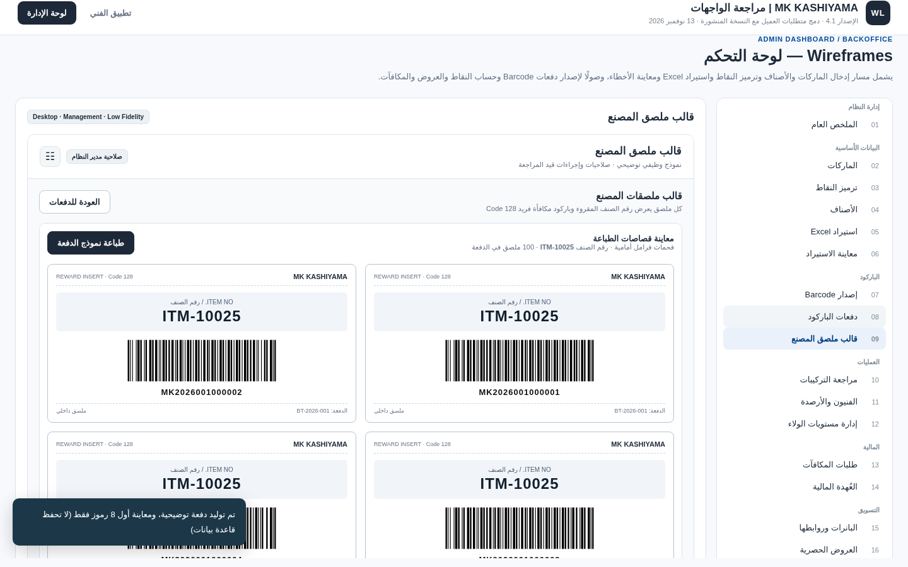
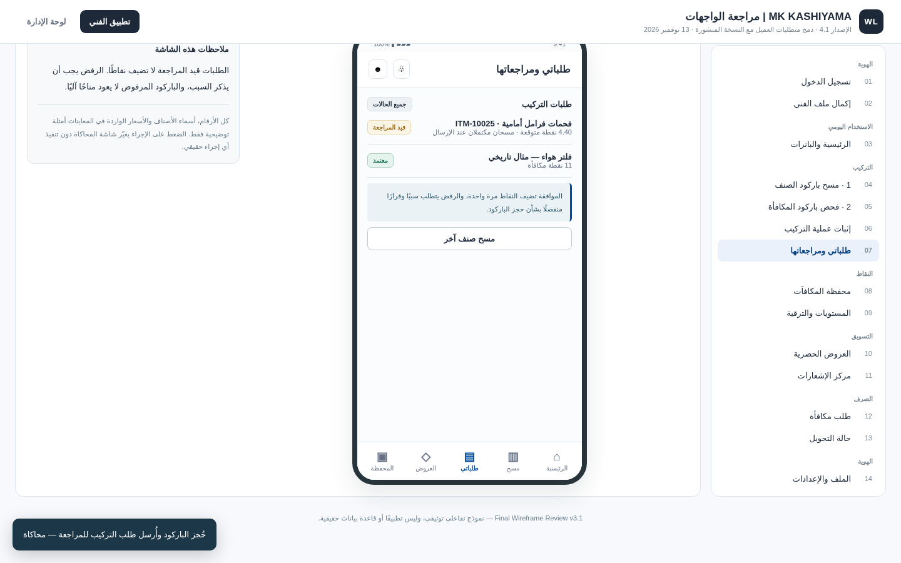

LOW-FIDELITY / V4.1PHASE 01✓ مكتملة
المخططات الأولية
Wireframe & User Flows
تخطيط مبدئي للوحة الإدارة وتطبيق الفني، يوضح أقسام المنصة وسيناريوهات الاستخدام والخطوات الرئيسية قبل الانتقال إلى التصميم المرئي النهائي.
هيكل المنصةتدفقات الاستخدامAdmin + Mobile
استعراض الـWireframe نسخة مرجعية محفوظة